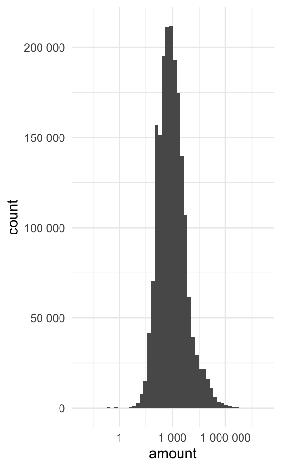

{kind=link}
library(tidyverse)In this post we will have a look at consuming some open data to try to get more enlightened about how a local municipality is run. Sweden is a fairly decent country when it comes to making sure taxpayer money are allocated properly, but every citizens should exercise their right to audit their government whenever possible! You know… just to keep them on their toes.
Umeå has its own open REST API service where you can find all sorts of data about and from the municipality. It is very well structured and even has a lot of functionality to do some analysis right in the browser. Since we are in love with R, we will skip that and go straight for some .csv-files. I found a some datasets with incoming supplier invoices, which I thought would be an interesting subject for a swift exploratory data analysis.
Direct links to the .csv’s: 2017, 2018, 2019, 2020, 2021, 2022
Exploring & cleaning the data:
Libraries:
Reading and binding together the data into a tibble:
invoices_raw <-
bind_rows(
read.csv2("leverantorsfakturor-2017.csv"),
read.csv2("leverantorsfakturor-2018.csv"),
read.csv2("leverantorsfakturor-2019.csv"),
read.csv2("leverantorsfakturor-2020.csv"),
read.csv2("leverantorsfakturor-2021.csv"),
read.csv2("leverantorsfakturor-2022.csv")
) %>%
# Use tibbles because they are awesome
tibble() %>%
# clean variable names ( <3 janitor!)
janitor::clean_names() %>%
# select variables of interest & proper classes
transmute(
across(c(financial_month,
verification_number),
as.character),
across(c(department,
supplier,
account_text),
as.factor),
amount = as.numeric(amount))identify any duplicates
Code
invoices_raw %>%
filter(duplicated(.)) %>% nrow()[1] 28115It turns out the dataset has some duplicate records. I’ll put that in the “human error” box and move on, deleting the duplicates. We can also get rid of the verification_number variable.
Let’s see what we’re working with:
Code
invoices_clean <-
invoices_raw %>%
distinct() %>%
select(-verification_number)
invoices_clean %>% skimr::skim_without_charts()| Name | Piped data |
| Number of rows | 1982831 |
| Number of columns | 5 |
| _______________________ | |
| Column type frequency: | |
| character | 1 |
| factor | 3 |
| numeric | 1 |
| ________________________ | |
| Group variables | None |
Variable type: character
| skim_variable | n_missing | complete_rate | min | max | empty | n_unique | whitespace |
|---|---|---|---|---|---|---|---|
| financial_month | 0 | 1 | 6 | 6 | 0 | 72 | 0 |
Variable type: factor
| skim_variable | n_missing | complete_rate | ordered | n_unique | top_counts |
|---|---|---|---|---|---|
| department | 0 | 1 | FALSE | 19 | Tek: 778107, För: 317385, Äld: 257629, Ind: 245531 |
| supplier | 0 | 1 | FALSE | 9786 | Mar: 126590, TEL: 124618, Ume: 110612, Grö: 77794 |
| account_text | 0 | 1 | FALSE | 322 | Liv: 417406, Mob: 118767, Övr: 111842, Elf: 93683 |
Variable type: numeric
| skim_variable | n_missing | complete_rate | mean | sd | p0 | p25 | p50 | p75 | p100 |
|---|---|---|---|---|---|---|---|---|---|
| amount | 0 | 1 | 11901.59 | 393866.1 | -137600000 | 220 | 720 | 2464.8 | 156978099 |
Turns out, the municipality recieved almost 2 million invoices in these six years. That’s quite impressive.
looking at skimr output, the invoice amounts looks wierd - let’s plot it and take a look!
invoices_clean %>%
ggplot(aes(amount))+
geom_histogram(bins = 50) +
scale_x_log10(label = scales::number_format()) +
scale_y_continuous(labels = scales::number_format())Warning in self$trans$transform(x): NaNs producedWarning: Transformation introduced infinite values in continuous x-axisWarning: Removed 83923 rows containing non-finite values (`stat_bin()`).